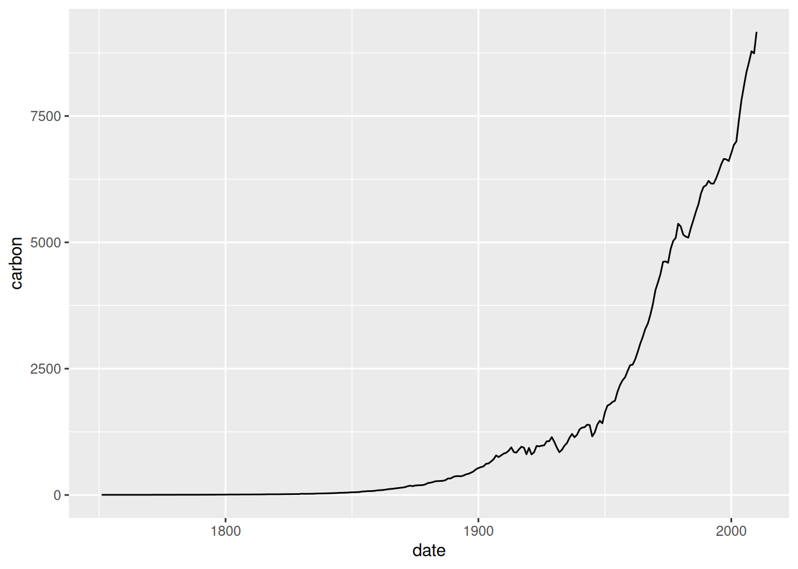
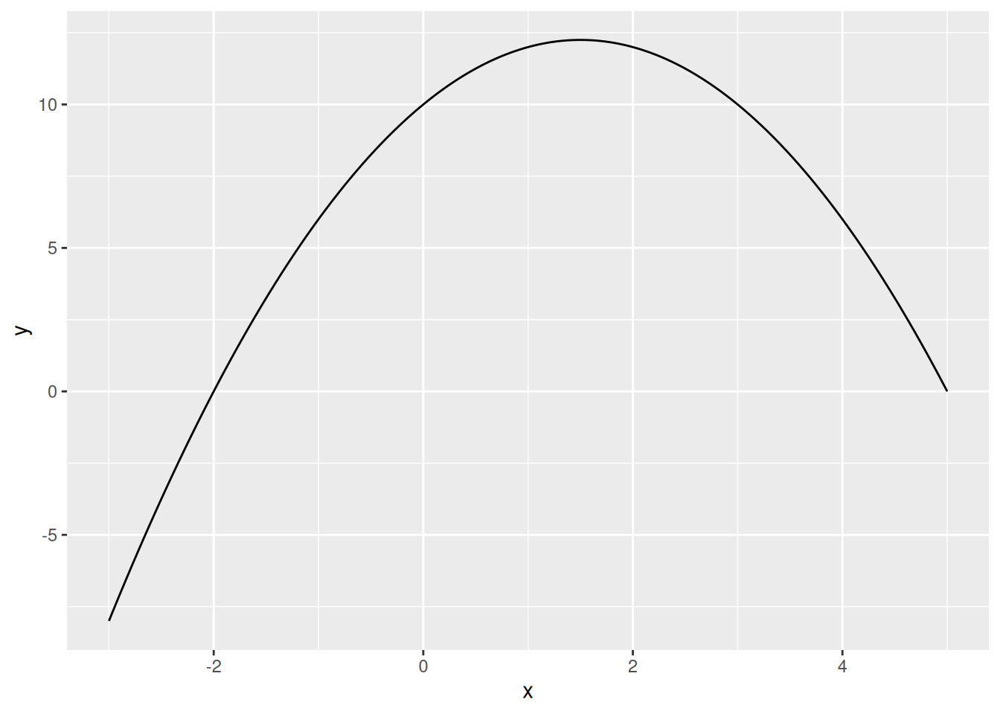
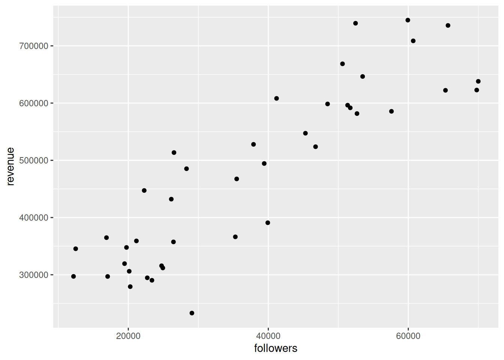

(abs(-4) + exp(2))/3[1] 3.796352
Write an R command that calculates the following:
\frac{|-4| + e^2}{3} where |x| is the absolute value of x.
Provide both the numerical answer and the R command.
Answer:
(abs(-4) + exp(2))/3[1] 3.796352Write an R command that calculates \log_2\left(3\right).
Provide both the numerical answer and the R command.
Answer:
log(3, base = 2)[1] 1.584963If we create the following vector in R, what class will it be?
c(TRUE, "TRUE")Note: You do not need to supply your code for this question.
Answer:
Character.
Explanation: All elements of a vector in R must have the same class. Because "TRUE" is character, all elements are coerced to be character. We can confirm this by checking the class of the vector:
class(c(TRUE, "TRUE"))[1] "character"Write an R command that generates a numeric vector containing the following sequence:
(10, 20, 30, \dots, 280, 290, 300, 10, 20, 30, \dots, 280, 290, 300) The resulting vector should have 60 elements.
Answer:
rep(seq(from = 10, to = 300, by = 10), times = 2) [1] 10 20 30 40 50 60 70 80 90 100 110 120 130 140 150 160 170 180 190
[20] 200 210 220 230 240 250 260 270 280 290 300 10 20 30 40 50 60 70 80
[39] 90 100 110 120 130 140 150 160 170 180 190 200 210 220 230 240 250 260 270
[58] 280 290 300An alternative approach that doesn’t use rep() or seq() would be:
c(1:30 * 10, 1:30 * 10) [1] 10 20 30 40 50 60 70 80 90 100 110 120 130 140 150 160 170 180 190
[20] 200 210 220 230 240 250 260 270 280 290 300 10 20 30 40 50 60 70 80
[39] 90 100 110 120 130 140 150 160 170 180 190 200 210 220 230 240 250 260 270
[58] 280 290 300Write a single numerical value of x in the box below that would return TRUE after running the following R command:
!(x > 2) & !(x < 0)
There are multiple correct answers. You will be marked as correct if your answer falls in the range of correct answers.
Answer: Any number between 0 and 2 inclusive would return TRUE. To see this:
x <- seq(from = -4, to = 4, by = 0.5)
data.frame(x, test = !(x > 2) & !(x < 0)) x test
1 -4.0 FALSE
2 -3.5 FALSE
3 -3.0 FALSE
4 -2.5 FALSE
5 -2.0 FALSE
6 -1.5 FALSE
7 -1.0 FALSE
8 -0.5 FALSE
9 0.0 TRUE
10 0.5 TRUE
11 1.0 TRUE
12 1.5 TRUE
13 2.0 TRUE
14 2.5 FALSE
15 3.0 FALSE
16 3.5 FALSE
17 4.0 FALSETherefore any number between 0 and 2 (including 0 and 2) would be correct.
Download the dataset startups.csv. The dataset contains information on startups with the following variables:
r_and_d_spend: The total spending on research and development (in $).marketing_spend: The total spending on marketing (in $).state: The state in the US the startup is located.profit: The profits of the startup (in $).When reading the dataset into R, assign it to df.
How many observations (rows) are in the dataset?
Provide both the numerical answer and the R command required to obtain the answer (if the dataframe is assigned to df).
Answer:
df <- read.csv("startups.csv")
nrow(df)[1] 50What is the mean of the variable r_and_d_spend?
Provide both the numerical answer and the R command required to obtain the answer (if the dataframe is assigned to df).
Answer:
mean(df$r_and_d_spend)[1] 73721.62What is the median of the variable marketing_spend?
Provide both the numerical answer and the R command required to obtain the answer (if the dataframe is assigned to df).
Answer:
median(df$marketing_spend)[1] 212716.2What is the mean of the variable profit for startups in California?
Provide both the numerical answer and the R command required to obtain the answer (if the dataframe is assigned to df).
Answer:
mean(df$profit[df$state == "California"])[1] 103905175In the dataset, how many startups are located in either New York or Florida?
Provide both the numerical answer and the R command required to obtain the answer (if the dataframe is assigned to df).
Answer: Here are some different ways to do this:
sum(df$state %in% c("New York", "Florida"))[1] 33sum(df$state == "New York" | df$state == "Florida")[1] 33nrow(df[df$state == "New York" | df$state == "Florida", ])[1] 33Download the dataset global.csv. The dataset contains the estimated annual global carbon emissions from 1751 to 2010 in million metric tons of CO_2 (variable Carbon). It also contains the estimated per capita carbon emissions from 1950-2010 in metric tons of CO_2 (variable Per.Capita). This was obtained by dividing the variable Carbon by the global population and multiplying by 1000000 (one million).
Download the following template script. Use it to clean the data and answer the questions that follow. In question 11 you will be required to upload your data cleaning script.
When reading the dataset into R, assign it to df (as done in the template script).
You should do the following cleaning tasks to your dataframe df in this order:
Date variable to a date.Per.Capita, replace "missing" with NA. This occurs in all years up to and including 1949.Per.Capita to numeric.Per.Capita to carbon_per_capita.If you did all the steps correctly, you should have 260 observations. The average of the carbon variable should be 1402.788 and the average of the carbon_per_capita variable should be 1.055 (when using the command summary(df$carbon_per_capita)). If only some of these match your cleaned dataset, you will still be able to answer some of the questions correctly.
Upload your script that cleans the data according to the steps in the block introduction.
Answer: Here are the data cleaning steps:
# Read in the dataset:
df <- read.csv("global.csv")
# Format the Date variable:
df$Date <- as.Date(df$Date, format = "%d/%m/%Y")
# Replace "missing" with NA in the variable Per.Capita:
df$Per.Capita[df$Per.Capita == "missing"] <- NA
# Convert the variable Per.Capita to numeric:
df$Per.Capita <- as.numeric(df$Per.Capita)
# Rename Per.Capita to carbon_per_capita:
names(df)[names(df) == "Per.Capita"] <- "carbon_per_capita"
# Convert all remaining variable names to lower case:
names(df) <- tolower(names(df))
# Perform the checks:
nrow(df)[1] 260mean(df$carbon)[1] 1402.788summary(df$carbon_per_capita) Min. 1st Qu. Median Mean 3rd Qu. Max. NA's
0.640 0.940 1.120 1.055 1.170 1.330 199 In the cleaned dataset, how many non-missing values are there for the variable carbon_per_capita?
Answer: One approach would be to see how many rows are in the data when the missings are omitted:
nrow(na.omit(df))[1] 61We can also count the number of non-missing values of the variable using:
sum(!is.na(df$carbon_per_capita))[1] 61Another approach is to use the information from the data description: we know the data for carbon_per_capita are available from 1950-2010. So we can just do:
length(1950:2010)[1] 61Using the cleaned dataset, plot the variable carbon over time. Choose the answer below which best describes what we see in the plot.
carbon increased in the 1800s during the industrial revolution, but has since decreased due to greater use of renewable energy.carbon is fluctuating randomly over time with no clear trend.carbon is growing exponentially over time.carbon is decreasing over time.Answer:
library(ggplot2)
ggplot(df, aes(date, carbon)) + geom_line()
We can see that apart from some small fluctuations, the variable carbon is growing exponentially over time.
Using the variables carbon and carbon_per_capita, find the earth’s population in 2010 expressed in billions (accurate to 3 decimal places).
Note: At the time this exam was created, the earth’s population was estimated to be 8,198,542,931. So to express this in billions accurate to 3 decimal places we would divide by 1000000000 (one billion) to get 8.199 (rounded to 3 decimal places). Note also that the variable carbon is expressed in millions of tons of CO_2, whereas carbon_per_capita is expressed in tons of CO_2 per person.
Answer:
df$population_in_bn <- (df$carbon / df$carbon_per_capita) / 1000
df$population_in_bn[df$date == as.Date("2010-01-01")][1] 6.892481Explanation:
Carbon per capita is calculated according to:
carbon\_per\_capita = \frac{carbon}{population} \times 1000000
We multiply by 1000000 because carbon is in millions of tons of CO_2. Rearranging we can get the estimate of the earth’s population given the other two variables:
population = \frac{carbon}{carbon\_per\_capita} \times 1000000
To get the population in billions then we divide this by one billion:
population\_in\_bn = \frac{carbon}{carbon\_per\_capita} \times 1000000 \times \frac{1}{1000000000}
Simplifying:
population\_in\_bn = \frac{carbon}{carbon\_per\_capita} \times \frac{1}{1000}
The following 3 questions will involve working with the following mathematical function defined over all real numbers x:
f(x) = 10 + 3x - x^2
Plot the function between the x values -3 and +5. Choose the answer below which best describes the shape of this function:
Answer:
f <- function(x) {
y <- 10 + 3*x - x^2
return(y)
}
library(ggplot2)
x <- seq(-3, 5, length.out = 2000)
y <- f(x)
df <- data.frame(x, y)
ggplot(df, aes(x, y)) + geom_line()
# We can see that it has an inverted U shape.Use R to find the value of x at an extreme point of this function.
Answer:
f_max <- optimize(f, c(-100, 100), maximum = TRUE)
f_max$maximum[1] 1.5What value does the function take at the extreme point?
Answer:
f_max$objective[1] 12.25# or alternatively:
f(f_max$maximum)[1] 12.25Download the two datasets:
state, region and revenue. The dataset contains the revenue (in dollars) for a company from 2024 in 41 US states and their corresponding region.state, and followers. The dataset contains the number of followers on social media for the same company in 2024 in the same 41 US states as the revenue data.Assuming the revenue-by-state-2024.csv dataset has been read into R as df1, write an R command in the box below that finds the total revenue by region. The output of your command should be:
region revenue
1 North Central 4125257
2 Northeast 3509775
3 South 4719654
4 West 7250169Answer:
df1 <- read.csv("revenue-by-state-2024.csv")
aggregate(revenue ~ region, FUN = sum, data = df1) region revenue
1 North Central 4125257
2 Northeast 3509775
3 South 4719654
4 West 7250168Merge the datasets revenue-by-state-2024.csv and followers-by-state-2024.csv by the variable state. Use the ggplot2 package to create a scatter plot with followers on the horizontal axis and revenue on the vertical axis. Choose the answer below which best describes how to interpret this plot.
Answer:
df1 <- read.csv("revenue-by-state-2024.csv")
df2 <- read.csv("followers-by-state-2024.csv")
df <- merge(df1, df2, by = "state")
library(ggplot2)
ggplot(df, aes(followers, revenue)) + geom_point()
Correct option: Where the number of followers is high, revenue tends to be high. Where the number of followers is low, revenue tends to be low.
Suppose instead of the datasets in the block introduction you received the following file instead: revenue-followers-by-state-2024.csv. Read in this dataset into R as df3.
Assuming the reshape2 package has been correctly loaded with the command library(reshape2), write a command in the box below that will transform df3 to the following:
state followers revenue
1 Alabama 16882 364882
2 Arizona 65312 622312
3 California 51330 596330
4 Colorado 69775 622775
5 Connecticut 41180 608180
6 Delaware 23375 290375
7 Florida 12172 297172
8 Georgia 24752 315752
9 Hawaii 52464 739464
10 Idaho 59933 744933
11 Illinois 22272 447272
12 Indiana 26141 432141
13 Kansas 39924 390924
14 Kentucky 20276 279276
15 Louisiana 12481 345481
16 Maryland 29085 233085
17 Michigan 39416 494416
18 Mississippi 24931 311931
19 Missouri 26525 513525
20 Montana 51709 591709
21 Nebraska 35483 467483
22 New Hampshire 53475 646475
23 New Jersey 48468 598468
24 New Mexico 52670 581670
25 New York 46752 523752
26 North Carolina 19463 319463
27 Ohio 37888 527888
28 Oklahoma 17047 297047
29 Oregon 69998 637998
30 Rhode Island 45305 547305
31 South Carolina 20130 306130
32 South Dakota 35292 366292
33 Tennessee 19741 347741
34 Texas 21158 359158
35 Utah 60703 708703
36 Vermont 57595 585595
37 Virginia 26451 357451
38 Washington 65672 735672
39 West Virginia 22710 294710
40 Wisconsin 28316 485316
41 Wyoming 50603 668603Answer:
df3 <- read.csv("revenue-followers-by-state-2024.csv")
library(reshape2)
dcast(df3, state ~ variable) state followers revenue
1 Alabama 16882 364882
2 Arizona 65312 622312
3 California 51330 596330
4 Colorado 69775 622775
5 Connecticut 41180 608180
6 Delaware 23375 290375
7 Florida 12172 297172
8 Georgia 24752 315752
9 Hawaii 52464 739464
10 Idaho 59933 744933
11 Illinois 22272 447272
12 Indiana 26141 432141
13 Kansas 39924 390924
14 Kentucky 20276 279276
15 Louisiana 12481 345481
16 Maryland 29085 233085
17 Michigan 39416 494416
18 Mississippi 24931 311931
19 Missouri 26525 513525
20 Montana 51709 591709
21 Nebraska 35483 467483
22 New Hampshire 53475 646475
23 New Jersey 48468 598468
24 New Mexico 52670 581670
25 New York 46752 523752
26 North Carolina 19463 319463
27 Ohio 37888 527888
28 Oklahoma 17047 297047
29 Oregon 69998 637998
30 Rhode Island 45305 547305
31 South Carolina 20130 306130
32 South Dakota 35292 366292
33 Tennessee 19741 347741
34 Texas 21158 359158
35 Utah 60703 708703
36 Vermont 57595 585595
37 Virginia 26451 357451
38 Washington 65672 735672
39 West Virginia 22710 294710
40 Wisconsin 28316 485316
41 Wyoming 50602 668602